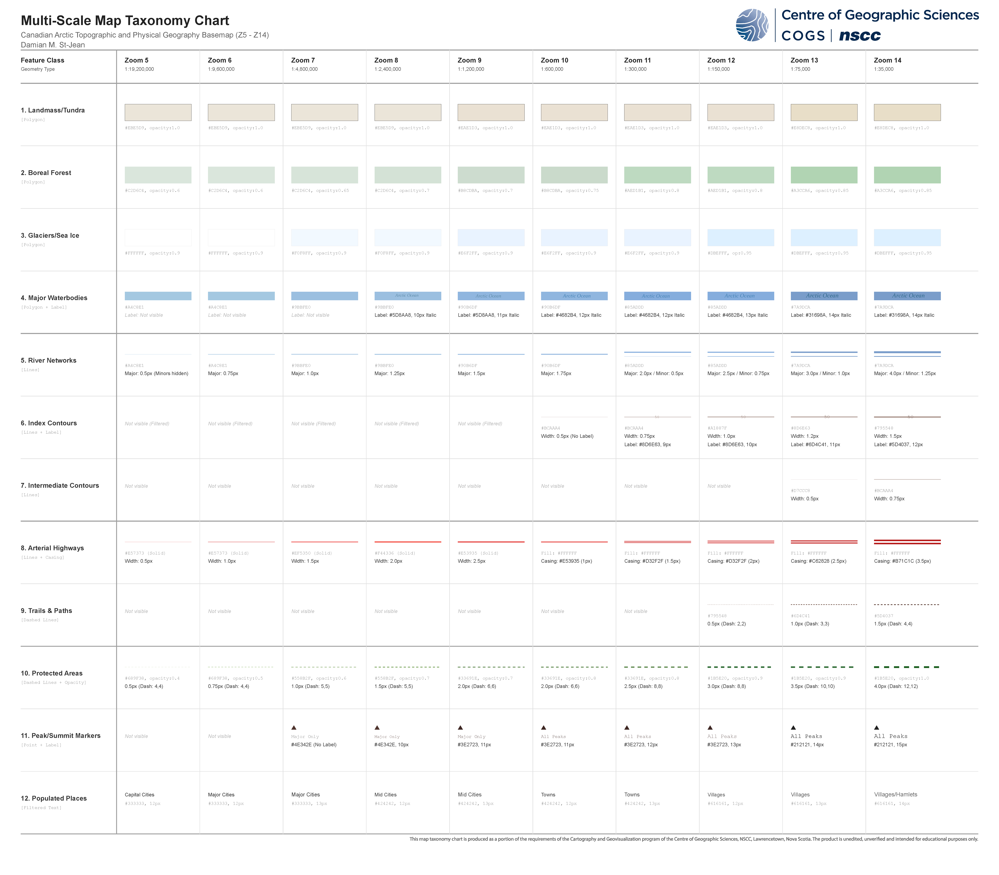
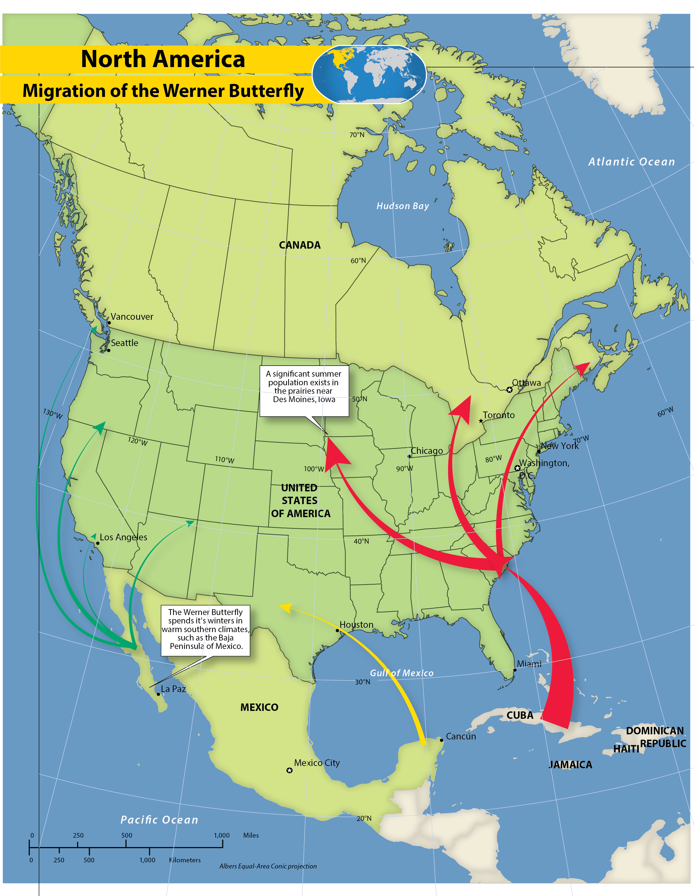
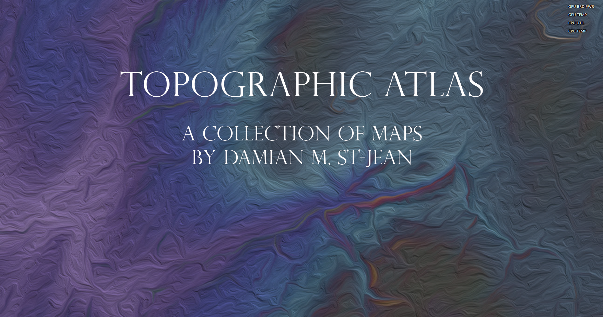
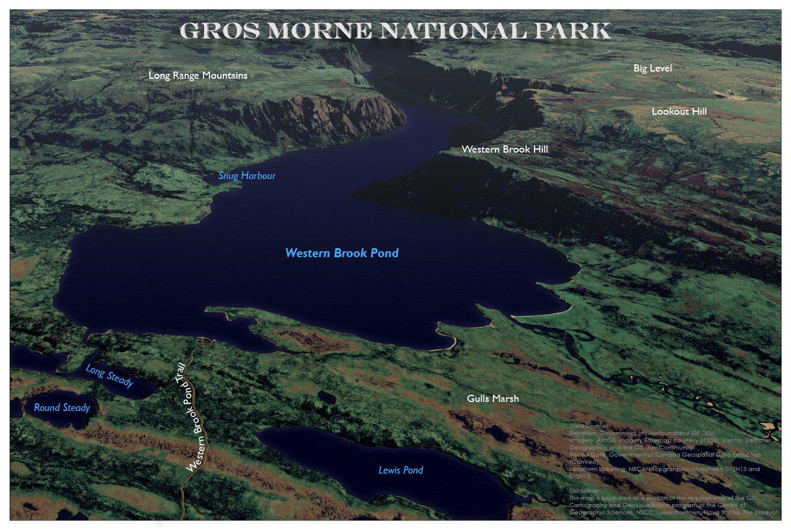

Thematic Flood Model
Hydrological modeling and thematic flood risk mapping. Processes DEMs to identify flow accumulation, sinks, and projected inundation zones under varying event severities.
Examine Model →I build reproducible workflows, process high-fidelity spatial data, and design clear, authoritative maps for decision makers. My primary focus is on emergency management in Nova Scotia—specifically dynamic flood and fire mapping that brings tangible, immediate benefits to our communities.
A curated journey through my hazard models, complex spatial analyses, and interactive dashboards.
Hydrological modeling and thematic flood risk mapping. Processes DEMs to identify flow accumulation, sinks, and projected inundation zones under varying event severities.
Examine Model →
An interactive, real-time web mapping dashboard designed to synthesize live field data into a highly legible format for remote stakeholders. Focuses on intuitive UI and responsive spatial filtering.
Examine Dashboard →
Temporal spatial data visualization leveraging animated mapping techniques. This project demonstrates how time-series data can uncover hidden geographic trends that static maps miss.
Watch Animation →
Rigorous categorization and classification of spatial metadata. A demonstration of data governance, ensuring spatial assets are discoverable, standardized, and compliant.
View Taxonomy →
Advanced spatial indexing and aggregation using Uber's open-source H3 framework. Demonstrates the power of discrete global grid systems for normalizing point data.
View Hex Grid →
Visualizing movement and connectivity across complex spatial networks. Utilizes line density and weighted flow paths to identify primary corridors of movement.
Analyze Flow →
Sophisticated risk assessment and hazard zone mapping workflows. Combines multiple environmental criteria to generate high-confidence risk perimeters for emergency planning.
Review Model →
A rigorous compilation of thematic and topographic maps. This atlas showcases strict adherence to cartographic standards, layout balancing, and multi-scale data representation.
Open Atlas →
Immersive 3D and panoramic spatial visualizations intended to give stakeholders a literal ground-level understanding of complex topographies.
Explore Panorama →
Advanced terrain analysis and shaded relief generation. Blending multi-directional hillshades with elevation color ramps to create hyper-realistic topographic representations.
View Terrain →
Data-driven cartography designed for public consumption. Marries hard demographic metrics with accessible graphic design to tell a clear, immediate story.
Read Infographic →I specialize in bridging the gap between raw environmental data and actionable emergency intelligence. In crisis situations, rapid response relies on the groundwork laid long before a disaster strikes. By building reproducible, automated pipelines in advance, I create resilient spatial frameworks that empower emergency managers to deploy critical resources without delay.
To achieve this, I bring a comprehensive, multi-disciplinary toolkit to every project. By integrating traditional field research and Entity-Relationship Diagrams (ERDs) with enterprise GIS suites, spatial AI, and rigorous Python automation, I construct workflows that are both robust and adaptable. My mission is to build the spatial infrastructure necessary to protect Nova Scotian communities from dynamic threats like floods and wildfires.
Enterprise GIS • Python (ArcPy) • Spatial AI • ERD & Database Design • Hazard Modeling • Field Operations • Emergency Management
Currently seeking GIS and mapping roles within Nova Scotia.
Location:
Colchester, Nova Scotia